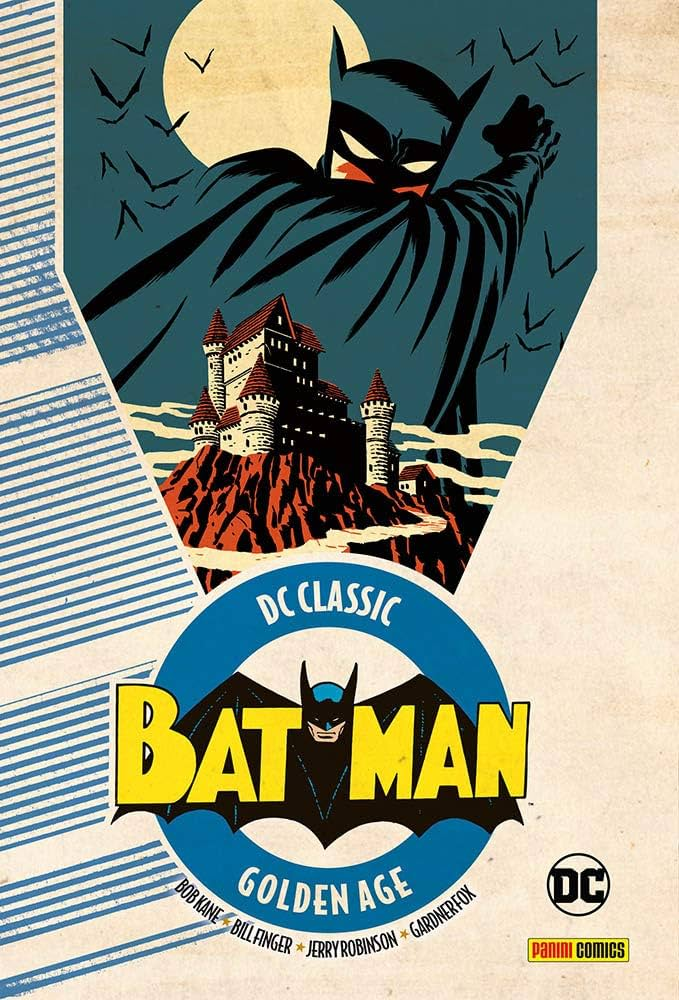

DC Classic: Batman 1 — Golden Age
USA 1939–1940Golden Age 1939

- Collana
- DC Classic (cartonato)
- Autori
- Bob Kane e Bill Finger, con Jerry Robinson
- Contiene
- Le prime storie da Detective Comics #27 in poi e Batman #1 (1939–40)
- Ambientazione
- L'anno zero del mito: la Gotham pulp delle origini
Perché è importante
Il punto zero assoluto: Detective Comics #27 (maggio 1939) presenta al mondo il "Bat-Man", poche pagine dopo arriva l'origine — i genitori uccisi nel vicolo, il giuramento, il pipistrello dalla finestra — e in rapida successione esordiscono Robin (Detective #38) e, su Batman #1, Joker e Catwoman insieme nello stesso albo. Un Batman più cupo e spiccio di quello che verrà, che nelle primissime storie non esita nemmeno a usare la pistola.
Curiosità da collezionista
Detective Comics #27 contende ad Action Comics #1 il titolo di albo più prezioso della storia: una copia è stata battuta all'asta per oltre un milione e mezzo di dollari. E per decenni il solo Bob Kane fu accreditato come creatore: Bill Finger, che inventò quasi tutto (costume, Gotham, Bruce Wayne, Joker), è stato riconosciuto ufficialmente dalla DC solo nel 2015.